VRayLight
VRayLight Overview
The VRayLight is a V-Ray specific light source plugin that can be used to create physically accurate area lights.
VRayLight Parameterse
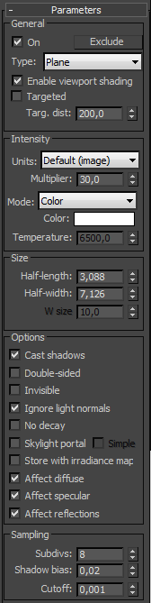 On - turns the VRayLight on and off.
Exclude - allows one to exclude objects from being illuminated or from shadow-casting for the light.
Type - specifies the shape of the light:
-
Plane - the VRayLight has the shape of a planar rectangle.
-
Sphere - the VRayLight has the shape of a sphere.
-
Dome - the VRayLight acts like the SkyLight object in 3ds Max. The light is coming from a (hemi)spherical dome above the z-axis of the light.
-
Mesh - allows the usage of any triangle mesh as the shape of the light. If the light is close to other surfaces in the scene, it is best to use this mode with GI enabled. This will allow V-Ray to use combined direct and GI sampling of the mesh light for best results. Without GI, the light may produce noisy results for surfaces that are very close to it. Currently there are some restrictions when using mesh lights; refer to the Notes section below.
Enable viewport shading - when enabled the effect of the light will be visible in the viewport
Targeted - when enabled the Plane light becomes targeted making it easier to point and position within the scene
Targ. distance - manually specifies the distance to the target
Intensity
Units - allows choosing the light units. Using correct units is essential when you work with the VRayPhysicalCamera. The light will automatically take the scene units scale into consideration to produce the correct result for the scale you are working with. The possible values are:
-
Default (image) - the color and multiplier directly determine the visible color of the light without any conversion. The light surface will appear with the given color in the final image when seen directly by the camera (assuming there is no color mapping involved).
-
Luminous power (lm) - total emitted visible light power measured in lumens. When this setting is used, the intensity of the light will not depend on its size. A typical 100W incandescent light bulb emits about 1500 lumens of light.
-
Luminance (lm/m^2/sr) - visible light surface power measured in lumens per square meter per steradian. When this setting is used, the intensity of the light depends on its size.
-
Radiant power (W) - total emitted visible light power measured in watts. When using this setting, the intensity of the light does not depend on its size. Keep in mind that this is not the same as the electric power consumed by a light bulb for example. A typical 100W light bulb only emits between 2 and 3 watts as visible light.
-
Radiance (W/m²/sr) - visible light surface power measured in watts per square meter per steradian. When this setting is used, the intensity of the light depends on its size.
Multiplier - multiplier for the light color; this is also the light intensity in the units chosen by the Intensity units parameter.
Mode - allows you to select the mode in which the color of the light will be determined:
-
Color - the light color is directly specified by the Color parameter. When using photometric units, this color is normalized so that only the color hue is used, whereas the light intensity is determined by the light Multiplier.
-
Temperature - the light color temperature (in Kelvin) is specified by the Temperature parameter.
Size
Half-length - the half-length of the light source, measured in scene units. If Sphere light source is selected this value corresponds to the sphere's radius. This parameter is ignored for Dome lights.
Half-width - the half-width of the light source, measured in scene units. This field has no effect when Sphere or Dome light source is selected.
W size - currently this parameter does nothing. It's reserved if (one day) the VRayLight supports box-shaped light sources.
Example: Normalize Intensity and the Correlation Between Light Size and Shadow Crispness
The following images show how the size of a light affects shadows. Bigger lights produce blurrier shadows, while smaller lights produce sharper shadows:
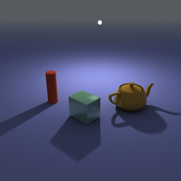
U size = 3.0; Normalize intensity is on
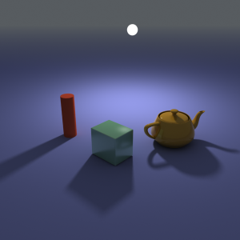
U size = 6.0; Normalize intensity is on
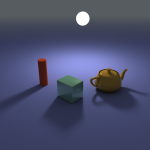
U size = 12.0; Normalize intensity is on
In the above images, the light appears to be of constant intensity. This is because the Normalize intensity option was turned on. This is what the three images look like with Normalize intensity off (the default). Larger luminaires have larger surfaces, which means that they emit more light. Note that the light multiplier had to be adjusted compared to the previous three images in order to produce similar light intensity; however, it is the same multiplier for all three images.
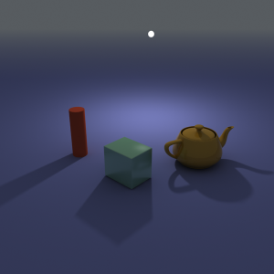
U size = 3.0; Normalize intensity is off (default)
U size = 6.0; Normalize intensity is off (default)
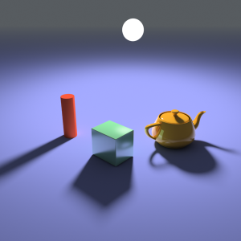
U size = 12.0; Normalize intensity is off (default)
Options
Cast shadows - when on (the default), the light casts shadows. Turn this option off to disable shadow casting for the light.
Double-sided - when the light is a planar light source, this option controls whether light is beamed from both sides of the plane. This field has no effect for Sphere or Dome light sources.
Example: Single-Sided vs Double-Sided Lights
This example demonstrates the difference between a single-sided and a double-sided planar area light:
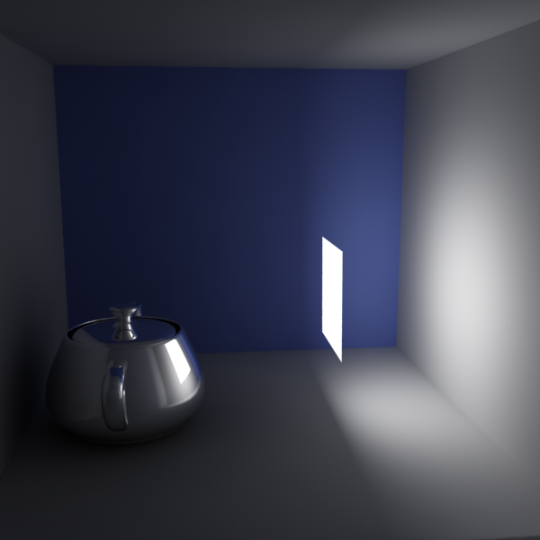
Double-sided is off
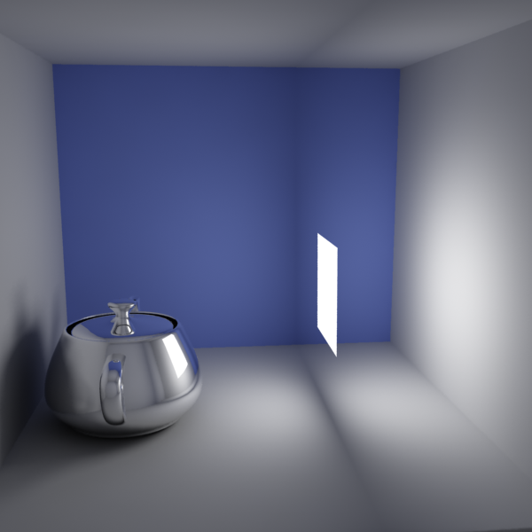
Double-sided is on
Invisible - this setting controls whether the shape of the VRayLight source is visible in the render result. When this option is turned off, the source is rendered in the current light color. Otherwise, it is not visible in the scene. Note that this option only affects the visibility of the light when seen directly by the camera or through refractions. The visibility of the light with respect to reflections is controlled by the Affect specular option.
Ignore light normals - normally, the surface of the source emits light equally in all directions. When this option is off, more light is emitted in the direction of the source surface normal.
No decay - nor mally the light intensity is inversely proportional to the square of the distance from the light (surfaces that are farther from the light are darker than surfaces which are closer to the light). When this option is on the intensity will not decay with distance.
Example: No Decay vs. Real-World Light Behavior
The following images demonstrate the No decay parameter. In the real world the light sources attenuate with the inverse square of the distance from the light to the shaded surface. However, you can disable light decay to achieve behavior similar to the standard 3ds Max lights. The settings for the light source the same for both images with the exception of the Decay parameter:
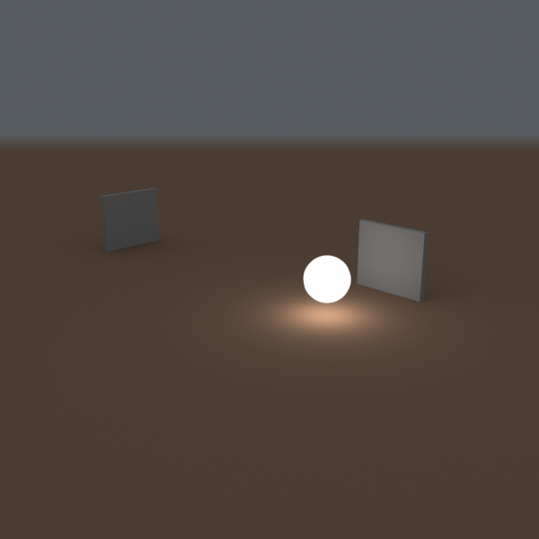
No decay is off (default)
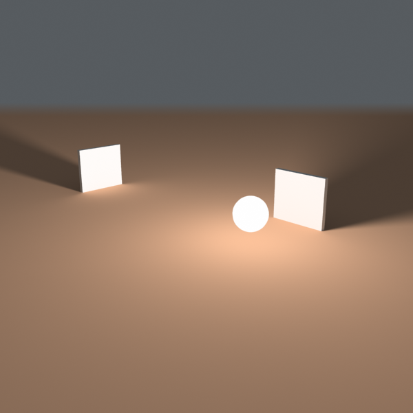
No decay is on
Skylight portal - when this option is on, the Color and Multiplier parameters are ignored; instead the light will take its intensity from the environment behind it.
Example: Skylight, Self-Illuminated Panels and VRayLights
Here is an example of a simple room where the light comes from the environment. The scene was rendered in several different ways:
-
with just environment skylight with irradiance map as a primary engine;
-
with a self-illuminated panel at the window, again with the irradiance map as a primary engine;
-
with a VRayLight at the window and the irradiance map as a primary GI engine;
-
with just environment skylight but with brute force GI as a primary engine.
In all cases, the Light cache was used as a secondary GI engine. The environment, the self-illuminated panel, and the VRayLight all have the exact same color and multiplier.
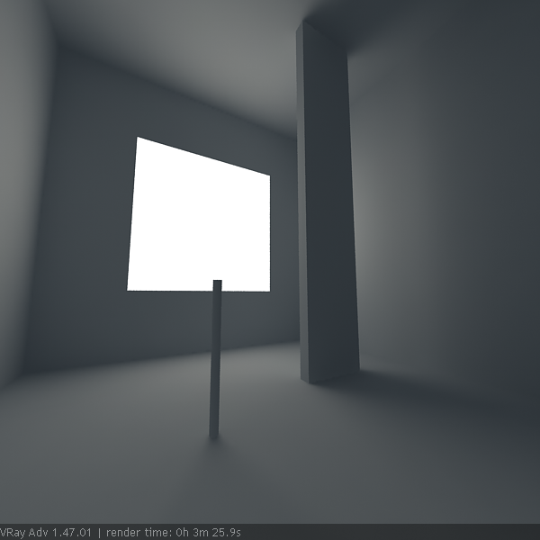
Environment light (skylight) only
Self-illuminated panel at the window
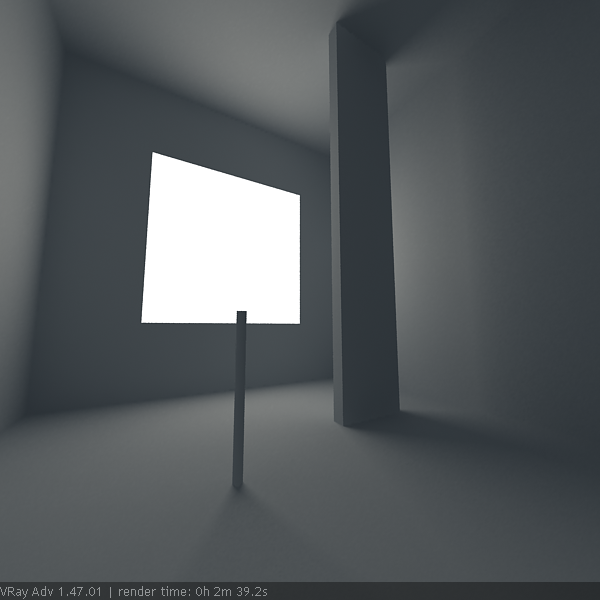
VRayLight at the window
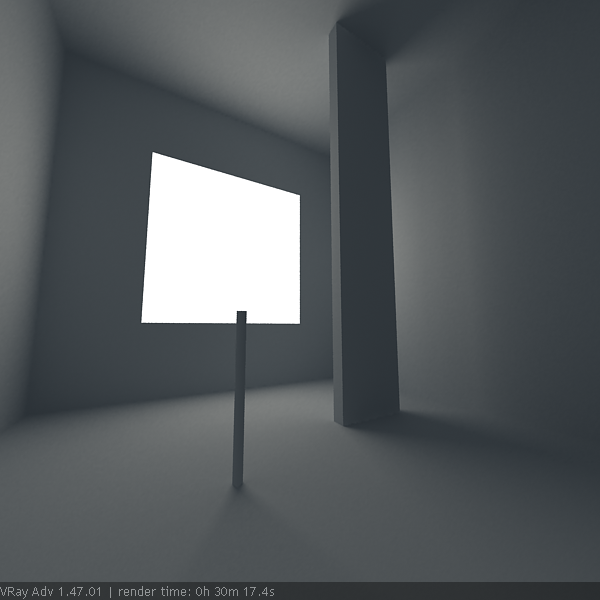
Environment light (skylight) only and brute force GI
As you can see, all methods produce the same light distribution, but there is a difference between render times and quality.
In the first two cases, we rely on the irradiance map to capture the lighting coming from the window. The result is very similar, as well as the rendering times. Since the irradiance map is a blurry method, the shadows come out a little blurred. Although we can reduce the blurring by using higher irradiance map settings, this will cost us additional render time.
In the third case, since we use a VRayLight, the shadows come out very sharp and nice, and the rendering time is reduced. This is because the irradiance map was calculated much faster - in the previous two cases, it had to trace a lot of rays to sample the window accurately.
In the fourth case, we used brute force GI instead of the irradiance map. This produces sharp shadows too, since the brute force GI is a non-blurry GI method. However, render time has increased quite a lot.
In this example, using a VRayLight produces the best result in the shortest time. However, if you need to have many lights, this method can become quite slow because every single light needs to be sampled.
Simple portal - this option is only enabled if the Skylight portal option is on . It tells the VRayLight that there is nothing of interest behind the light itself, and so the environment color can be used directly. Normally, the portal light takes its color from whatever objects are behind it. In order to do this, the light traces additional rays, which may slow down the rendering. Turning this option on makes the rendering of portal lights faster.
Store with irradiance map - when this option is on and GI calculation is set to irradiance map, V-Ray will calculate the effects of the VRayLight and store them in the irradiance map. The result is that the irradiance map is computed more slowly but the rendering takes less time. You can also save the irradiance map and reuse it later.
Affect diffuse - this determines whether the light is affecting the diffuse properties of the materials.
Affect specular - this determines whether the light is affecting the specular of the materials.
Affect reflections - th is determines whether the light will appear in reflections of materials.
Sampling
Subdivs - this value controls the number of samples V-Ray takes to compute lighting. Lower values mean more noisy results, but will render faster. Higher values produce smoother results but take more time. Note that the actual number of samples also depends on the DMC Sampler settings.
Shadow bias - bias moves the shadow toward or away from the shadow-casting object (or objects). If the Bias value is too low, shadows can "leak" through places they shouldn't, produce moire patterns or making out-of-place dark areas on meshes. If Bias is too high, shadows can "detach" from an object. If the Bias value is too extreme in either direction, shadows might not be rendered at all.
Cutoff - this parameter specifies a threshold for the light intensity, below which the light will not be computed. This can be useful in scenes with many lights, where you want to limit the effect of the lights to some distance around them. Larger values cut away more from the light; lower values make the light range larger. If you specify 0.0, the light will be calculated for all surfaces.
Example: Combined sampling of area lights
This example demonstrates combined sampling of area lights with direct and indirect lighting in V-Ray. A Mesh light is shown here, but the same principle applies in varying degrees to all other modes of the VRayLight. It is also valid for VRayLightMtl materials with the Direct lighting option on.
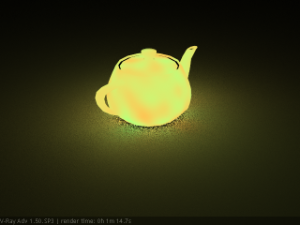
Direct illumination only (GI is off) - areas close to the light are noisy, while areas far from the light are smooth. It will take a lot more samples to clear the noise.
Only GI (Brute force) - areas away from the light are noisy, while areas close to the light are smooth. It will take a lot more samples to clear the noise.
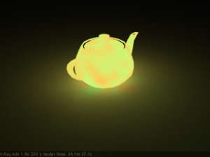
Direct illumination and GI - combined sampling - both areas close to the light and areas away from it are smooth.
Texture
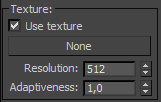 Use texture - when the Rectangle, Dome, or Mesh light type is used, this tells the light to use a texture for the light surface. If there are surfaces which are close to a texture-mapped light, it is best to have GI enabled. This allows V-Ray to use combined direct and indirect sampling for the light, reducing the noise for surfaces close to the light.
Texture - specifies the texture to use. The texture intensity is also affected by the Multiplier of the light.
Resolution - specifies the resolution at which the texture is resampled for importance sampling.
Adaptiveness - controls the amount to which light sampling is tuned to the texture brightness. If 0.0, no adaptation based on texture intensity is performed. When set to 1.0 (the default), the maximum amount of adaptation is used. Changing this parameter may be required if there are very bright portions of the map, which are however obscured for the particular scene. This will prevent the light from concentrating a lot of samples in this area and shooting too few samples in other parts of the texture. This parameter is ignored when the light type is Mesh, as in that case sampling is not dictated by texture brightness.
Rectangle Light Options
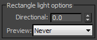 The options in this section affect the light when the Type is set to Plane.
Directional - by default the light from the Plane light is spread out equally in all directions. This parameter allows the user to narrow the spread and make the light directional. The default value is 0 and increasing it makes the light beam more narrow and concentrates it in one direction.
Preview - allows us to set up a preview for the effect of Directional parameter in the viewport.
-
Always - the preview is always displayed
-
Selected - the preview is displayed only when the light is selected
-
Never - the preview is never displayed
Dome Light Options
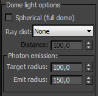 Spherical (full dome) - when on, this option causes the dome light to cover the entire sphere around the scene. When off (the default), the light covers a hemisphere only.
Ray Dist - allows you to specify the maximum distance to which shadow rays are going to be traced.
-
From GI Settings - the Ray Dist value is determined by the Ray Dist parameter in the GI settings.
-
Explicit - the Ray Dist value is determined by the Distance parameter.
Target radius - for the Dome light, defines a sphere around the light icon where photons are being shot when photon-mapped caustics or the global photon map are used.
Emit radius - for the Dome light, defines a sphere around the light icon from which photons are being shot towards the target radius area.
(IBL) Image-Based Lighting - for th e Dome light, supports arbitrary texture maps that determine the amount of light coming from each direction on the virtual dome hemisphere based on HDR images.
Example: IBL (Image-Based Lighting)
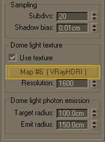
V-Ray then uses importance sampling to trace more rays in the directions where most of the light is coming from. This ensures speed and quality that were never before possible with pure gathering GI methods.
-
Easy setup for image-based lighting (IBL);
-
Importance sampling of the dome texture for fast and clean results;
-
Support for photon mapping for fast and accurate caustic effects.
In the following example we will show how this works with a HDR image.
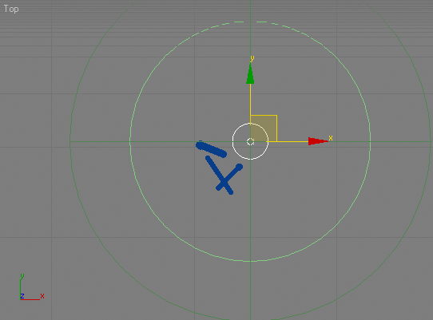
Initial position of the dome-light.
Z axis is perpendicular to the ground plane.
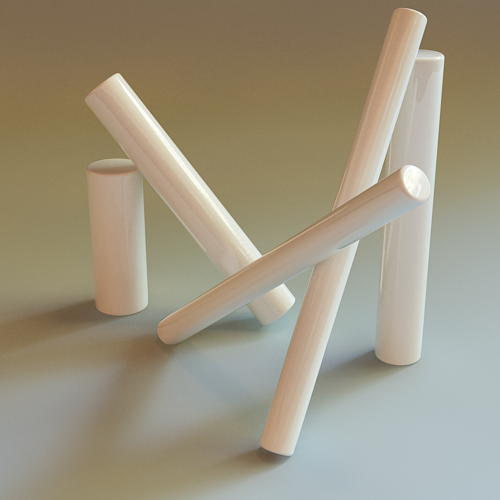 fg
Rendered image
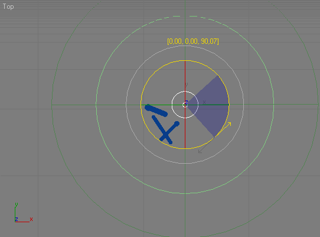
Position 1
This time the dome is rotated along its Z axis to 90 degrees. Notice this has no effect, as the dome is using the same part of the HDRI.
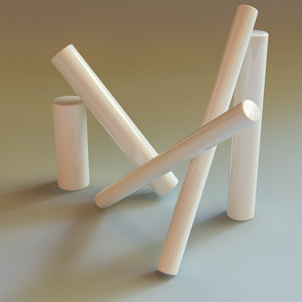
Rendered image
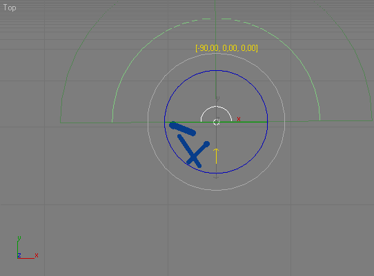
Position 2
The dome is rotated along its X axis to 90 degrees. Now the dome uses another part of the HDRI.
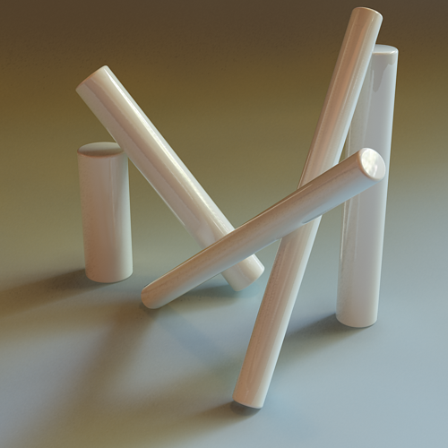
Rendered image
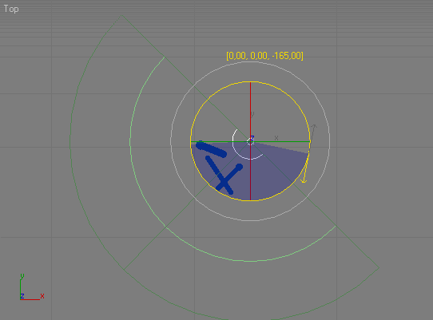
Position 3
The dome is rotated along its X axis to -165 degrees. Notice how the shadows have changed, due to the softer light in the HDRI.
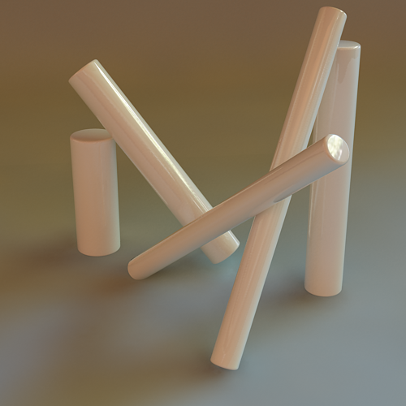
Rendered image
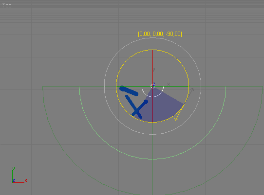
Position 4
Another 90 degrees on the X axis from the previous position. A slightly sharper shadow has appeared.
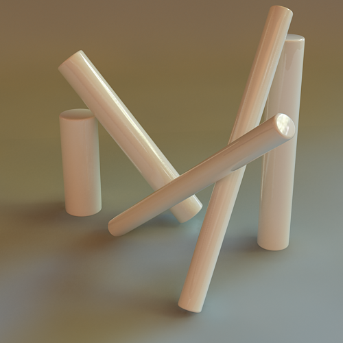
Rendered image
Now we are going to show how the HDRI parameters also can affect the rendered image.
We will rotate the HDRI from the material editor.
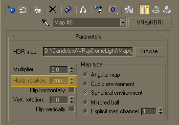

Position 5
Rotating the HDRI to -200 degree. Now the dome obviously uses some of the brightest range from it.
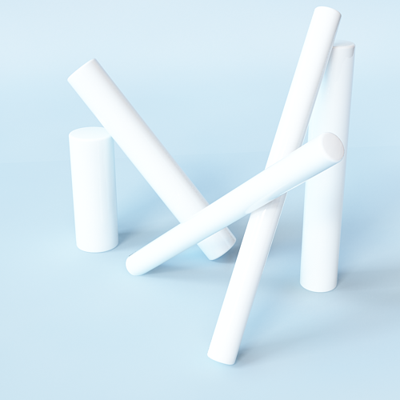
Rendered image
This time we will reduce the HDRI multiplier and add more rotation.
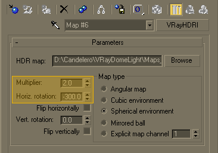

Position 5
Rotating the HDRI to -300 degree. Notice how the multiplier affects the overall scene lighting. We haven't changed the dome position.
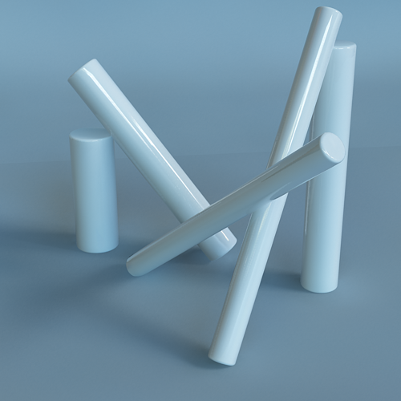
Rendered image
We will go further, adding some vertical rotation to the HDRI.
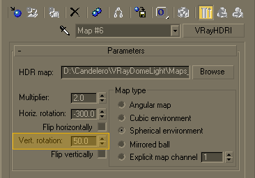
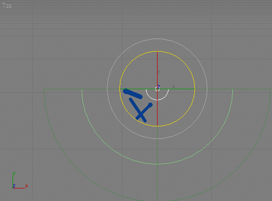
Position 5
Adding 50 degrees vertical rotation to the HDRI. See how the light and shadows have changed a lot. The highlight position is different now.
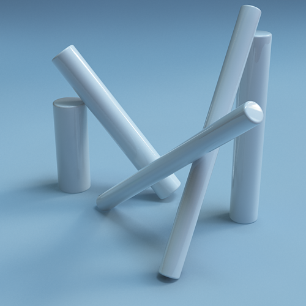
Rendered image
Reset the horizontal rotation to 0.0. Multipliers: 2.0 and 5.0
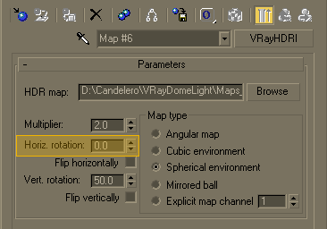 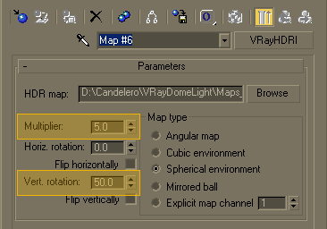
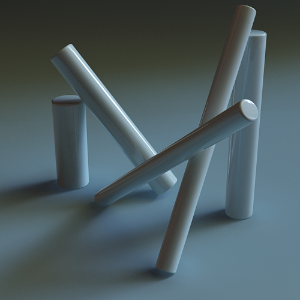
Rendered image
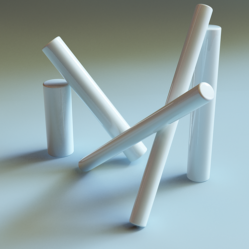
Rendered image
Example: IBL and Caustics
From the VRay Caustics rollout, turn caustics on. Assign a glass material on the cylinders.
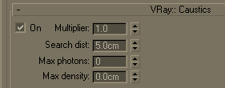
Position 5
We are using the last setup of the HDRI from the Example 5. The caustic effect is almost not visible.
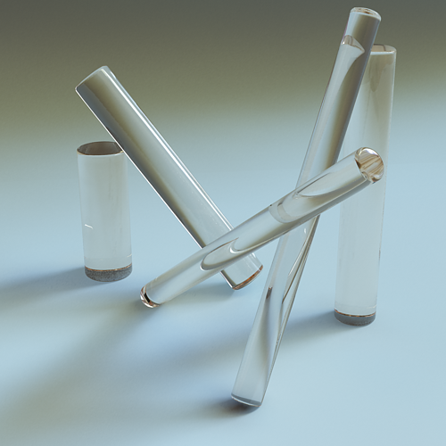
Rendered image
We will raise the multilplier to 3.0 and set the search distance to 1.0 unit.
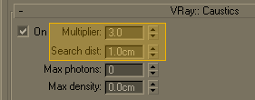

Position 5
Now the effect is visible, though the search distance appears to be too small.
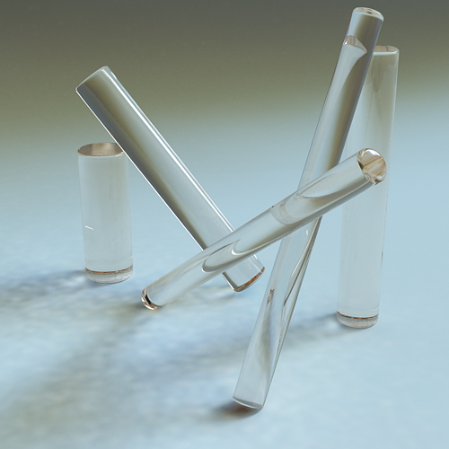
Rendered image
Caustics multiplier set to 5.0, 10.0. Search distance 5.0 units.
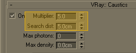 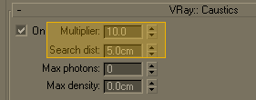
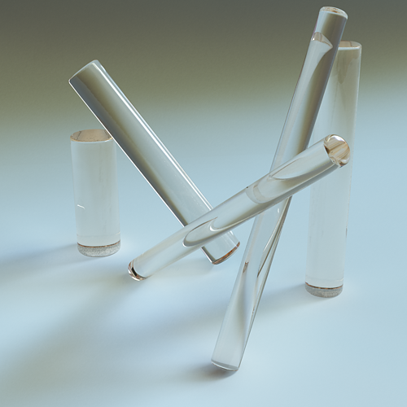
Rendered image
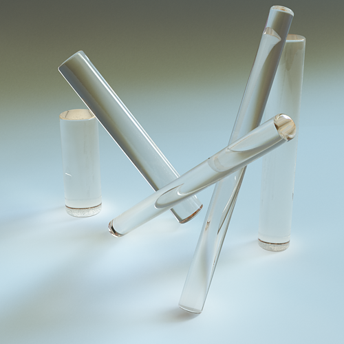
Rendered image
Other caustics examples:
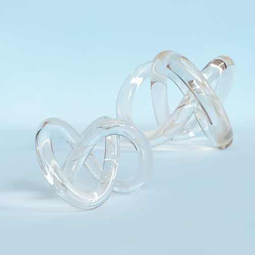
Rendered image
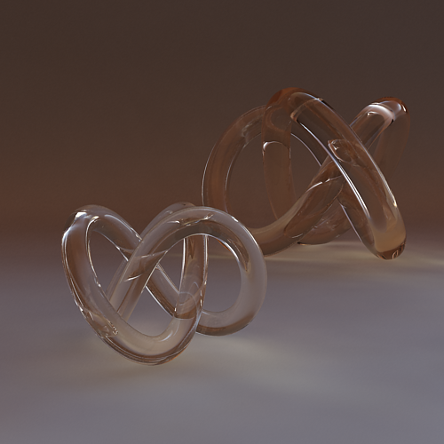
Rendered image
Mesh Light Options
Pick mesh - click on the button to select any triangle mesh object from the scene as the shape of the light. If no mesh is specified, the light will assume a box shape.
Flip normals - if this is on, the normals of the mesh source will be inverted thus producing light on the opposite side.
Replace mesh with light - if this option is checked when you pick the mesh, it will be removed and the V-Ray mesh light will be created in its place.
Extract mesh as node - use this button to restore when you have created a mesh light replacing the actual geometry with the light you can get the original geometry back by clicking on this button.
Advanced
These options do not generally need to be changed. They are used in very very specific situations.
MIS - this option allows to disable Multiple Importance Sampling for the light. When MIS is enabled (the default), the light's contribution is split between direct illumination on the one hand, and GI (for diffuse materials) or reflections (for glossy surfaces). This means that portions of the light's contribution will end up in the GI render elements (or the reflection render elements respectively). In certain specific situations this is undesirable and this option can be used to always calculate the light contribution through direct illumination.
Disabling this option may increase noise, especially in glossy reflections. Only disable it when you have a reason to.
Notes
-
When using Mesh lights or texture-mapped Plane lights, it is best to have GI enabled. This allows V-Ray to use combined direct and indirect sampling for the light, which greatly reduces the noise for surfaces close to the light.
-
Currently, Mesh lights do not work properly if the mesh source object has motion blur. This will be implemented in a future release. Motion blur works properly for the other light types (Plane and Sphere).
-
The effect of all textured V-Ray lights can be shown through the Nitrous preview in the viewport. To enable the preview of the Dome Light illumination the following windows variable has to be manually created VRAY_DOME_VIEWPORT=1